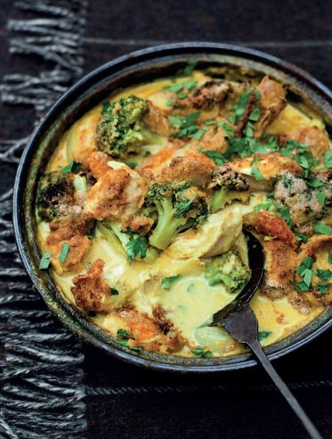

Chicken and broccoli bake

This simple midweek supper takes me back to my childhood as it’s an adaptation of one of my mother’s recipes. If I have time I’ll poach a whole chicken rather than chicken breasts, as it gives a tastier stock.
Heat the oven to 180°C. Have the chicken breasts ready at room temperature.
Bring the water to the boil in a wide pan. Add the onion, carrot, bouquet garni and peppercorns and simmer for 10 minutes. Add the chicken breasts, making sure there is enough water to cover them. Lower the heat and poach gently for 10–12 minutes. Remove from the heat.
Using a slotted spoon, lift out the chicken and vegetables onto a plate and set aside. Measure 600 ml stock and reserve.
In another pan of boiling salted water, blanch the broccoli for 3–4 minutes. Drain and set aside.
Meanwhile, heat the butter in a heavy-based saucepan, stir in the flour and cook for 1–2 minutes. Now add the cumin and curry powder and cook, stirring frequently, for another 2 minutes. Gradually stir in the reserved stock and bring to the boil, stirring.
Let the sauce simmer, stirring often, for 4 minutes, then remove from the heat. Stir in the crème fraîche and grated Cheddar. Add a squeeze of lemon juice and season with salt and pepper to taste.
Tear or cut the chicken into pieces. Scatter the reserved onion and carrot into a buttered, shallow ovenproof dish. Add the chicken and broccoli florets.
Pour the cheese sauce over the chicken and vegetables to cover. Sprinkle with the breadcrumbs and bake for 20–25 minutes until the topping is golden brown and crunchy. Scatter the chopped parsley over the bake and serve.